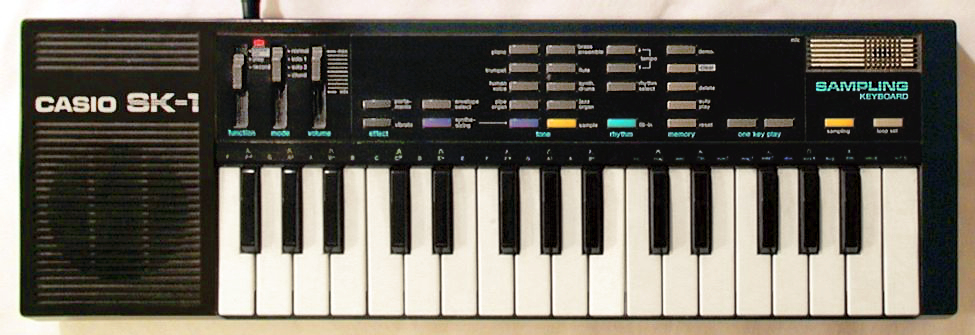

The One-Button Sampler
The Casio SK-1 reduced digital sampling to a single physical gesture — and accidentally created the circuit-bending movement.
In 1985, professional digital sampling worked like this: you sat at a Fairlight CMI, which cost roughly as much as a house, and used a light pen to define waveform start and end points on a glowing CRT. The sampling gesture was a multi-step editing ritual — selecting, zooming, looping — executed through a device that required its own dedicated room and a six-figure budget.
Then Casio released the SK-1, which worked like this: you slid a switch, held one button, made a sound, and let go.
That was the entire interaction. Slide, hold, release.
For $99.95 — roughly the cost of a nice dinner in 1985 — the SK-1 reduced the most expensive creative technology of its era to a single physical gesture. Any sound in the world, captured through a built-in microphone or line-in jack, was allocated 1.4 seconds of 8-bit, 9.38 kHz memory and automatically mapped across 32 miniature piano keys, playable chromatically. There was no menu, no waveform display, no file system, no editing step. The sample was ready the moment you released the button. The interaction model was point, press, play — decades before smartphone cameras and voice memos made the same immediacy feel ordinary.

The SK-1's technical limitations — low sample rate, 4-note polyphony, a built-in speaker the size of a coin — became part of its expressive character. Music made with the SK-1 sounds like the SK-1, unmistakably, in the same way that music made with a Fender Stratocaster sounds like a Stratocaster. But its real contribution to interaction design was invisible in the spec sheet: the sampling workflow lived in a single unambiguous hardware gesture. Professional samplers asked you to learn. The SK-1 asked you to press a button.
Then the accident happened.
The SK-1 achieved its most famous legacy through a feature its designers never included. The device's low-cost construction left PCB traces exposed on the underside of the circuit board — a manufacturing concession, not a design intention. Users discovered that touching different points on the bare board with their fingers introduced their own body into the circuit, shorting components and producing sounds the SK-1 was never designed to make: glitches, stutters, alien textures, rhythms that mutated as skin conductivity and finger placement shifted.
This was circuit bending — the practice of creatively short-circuiting electronic devices to produce new sounds — and the SK-1 became its most famous platform. Reed Ghazala, who coined the term, called it "the anti-theory of music." You didn't study the schematic. You touched the board and listened.
The bending gesture was as simple as the sampling gesture: touch the PCB. Your hand on the naked circuit became the instrument's most expressive control surface. Different people produced different sounds. The same person sounded different depending on humidity, finger pressure, and which solder points they bridged. The machine became a conversation between you and the copper.
A triple life.
The SK-1 is a rare artifact in the museum's collection: a mass-market consumer product that became simultaneously a professional tool, a hacker platform, and a cultural icon — all from the same piece of injection-molded plastic.
Autechre used SK-1s in their earliest recordings. Damon Albarn played one on Blur's "Advert." Jungle pioneer DJ Hype built early beats with it. Large Professor sampled through it. Soccer Mommy put an SK-1 on her album cover. The same $99.95 toy that reduced sampling to one button also created the circuit-bending movement that taught a generation of musicians that the device itself was unfinished — and that touching the bare circuit with your fingers was not a mistake but a technique.
The SK-1 belongs in the HCI Museum alongside a handful of other artifacts where the interface was accidentally more interesting than the intended one: the Cracklebox, where your skin completes the circuit, and the Casio VL-1, where a physical switch rewrites what every key means. All three are machines that reward the user who tries something the manual doesn't describe.
One button. One gesture. A thousand sounds its engineers never imagined. The SK-1 is a case study in what happens when interaction design is so clear, so minimal, that users can't help but discover what the machine was never told to do — and what happens when a manufacturing cost-savings measure becomes a movement.